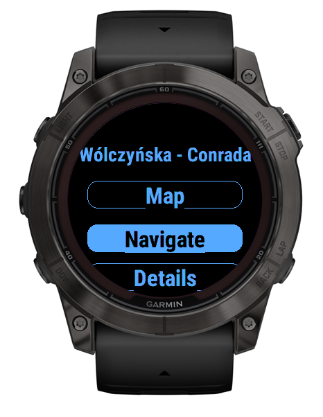

Unsere App bietet eine Reihe von Funktionen, die Ihr Erlebnis mit dem Fahrradverleih reibungslos gestalten:
- Finde die nächstgelegenen Fahrradstationen und überprüfe, wie viele Fahrräder an jeder Station verfügbar sind.
- Verfügbar auf Garmin-Geräten, damit du unterwegs einfachen Zugriff hast.
- Detaillierte Liste der verfügbaren Fahrräder an jeder Station anzeigen.
- Navigiere direkt zur ausgewählten Station mit unserer App.
- Standorte auf Google Maps anzeigen, um eine bessere Übersicht zu erhalten.
- Filtere Fahrräder nach Typ, um das perfekte Fahrrad für dich zu finden.
Teste es kostenlos! Wir bieten eine Testversion, mit der du die App ausprobieren kannst.
Screenshots
| Startbildschirm | Standortliste | Fahrradliste |
|---|---|---|
 |
 |
 |
| Karte | Standortansicht |
|---|---|
 |
 |
Wir bemühen uns, den bequemsten und effizientesten Fahrradverleih-Service bereitzustellen. Probiere unsere App noch heute aus!